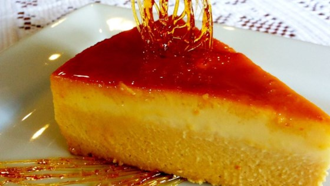
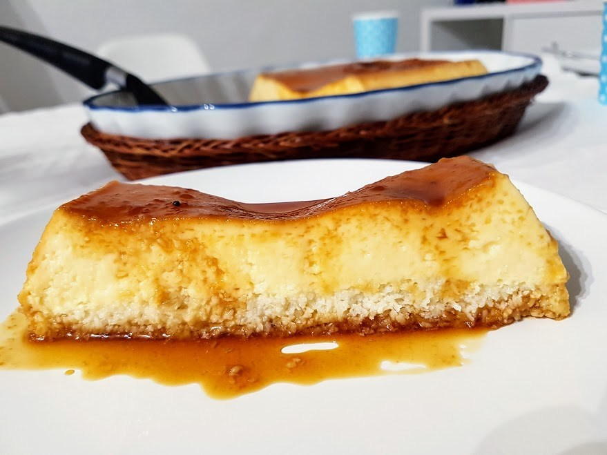

<!DOCTYPE html>
<html>
<head lang="en">
<meta name="viewport" content="width=device-width, user-scalable=no"/>
    <title>Flanes</title>
    <link rel="stylesheet" type="text/css" href="Estilos.CSS">
    
    <body>
    <div class="cabecera">
        <center></center>
    </div>
    </body>
     <body background="25120819-cerrar-un-fondo-de-coloridos-dulces-de-caramelos-de-azucar.jpg"> 
     </body>
    
    
 <body><a href="espanol.html"></a></body>
     <form>
    <div class="contenido">
         <center><h1><font face="Comic Sans MS,arial,verdana"size=5>Flan de mango</font></h1></center>
        <center></a></center>
        <center><h1><font face="Comic Sans MS,arial,verdana"size=5>Ingredientes</font></h1></center>
        <center><h1><font face="Comic Sans MS,arial,verdana"size=4>200 grs. de mango pelado troceado, 200 ml. de leche descremada, 200 ml. de nata para cocinar (15 % de materia grasa), 6 hojas de gelatina ( si no las encuentras, puedes utilizar gelatina neutra en polvo, la cantidad recomendada para 500 ml. que normalmente es un sobre y seguir las instrucciones del fabricante para añadirla, 1 cucharada de azúcar vainillado, 3 cucharadas de azúcar blanco (unos 60 grs.), Caramelo líquido.</font></h1></center>
        <center><h1><font face="Comic Sans MS,arial,verdana"size=5>Preparación</font></h1></center>
        <center><h1><font face="Comic Sans MS,arial,verdana"size=4>Carameliza el molde que prefieras, ya que al no tener que darle cocción nos servirá cualquiera.</font></h1></center>
        <center><h1><font face="Comic Sans MS,arial,verdana"size=4>Puedes utilizar caramelo líquido envasado o hacerlo tú mismo.</font></h1></center>
        <center><h1><font face="Comic Sans MS,arial,verdana"size=4>Tan sólo tienes que calentar unos segundos al micro a baja potencia ( si el recipiente es apto ), para hacerlo más líquido y así poder impregnar las paredes inclinando el molde.</font></h1></center>
        <center><h1><font face="Comic Sans MS,arial,verdana"size=4>Si fuera metálico, introduce en otro recipiente con agua bien caliente hasta que veas que se pone bien fluido.</font></h1></center>
        <center><h1><font face="Comic Sans MS,arial,verdana"size=4>Añade a una sartén antiadherente unas 4 cucharadas de azúcar y un poco de agua.</font></h1></center>
        <center><h1><font face="Comic Sans MS,arial,verdana"size=4> Deja que empiece a hacer pompas y remueve entonces con la misma sartén hasta que tenga un tono oscuro.</font></h1></center>
        <center><h1><font face="Comic Sans MS,arial,verdana"size=4>En un cazo calienta sin que llegue a hervir el vaso de leche, los dos tipos de azúcar y el mango troceado, mientras tanto pon en remojo las hojas de gelatina en agua fría.</font></h1></center>
    <center><h1><font face="Comic Sans MS,arial,verdana"size=4>Cuando el contenido del cazo esté caliente añade las hojas de gelatina exprimidas con las manos y remueve unos segundos ( se disuelven en seguida ), retira el cazo del fuego y tritura bien con la batidora.</font></h1></center>
    <center><h1><font face="Comic Sans MS,arial,verdana"size=4>Incorpora la nata y remueve con ayuda de una espátula o cuchara hasta que veas que se ha integrado con el resto de la mezcla, vierte todo al molde, pasando por un colador por si quedan restos de mango, una vez templado, deja enfriar en la nevera o refrigerador unas 4-5 horas si es un molde grande y si los moldes son individuales lo tendrás listo en menos tiempo, si utilizas un molde de silicona, coloca un plato debajo para facilitarte el traslado a la nevera sin que se deforme; y desmolda haciendo un poco de presión con los dedos desde los bordes hacia el centro por todo el contorno, en otros moldes pasa un cuchillo fino por los bordes</font></h1></center>
</div>
    <div class="contenido">
         <center><h1><font face="Comic Sans MS,arial,verdana"size=5>Flan de nata y coco en microondas</font></h1></center>
         <center></center>
        <center><h1><font face="Comic Sans MS,arial,verdana"size=5>Ingredientes</font></h1></center>
        <center><h1><font face="Comic Sans MS,arial,verdana"size=4>4 huevos, 100 gr. de azúcar (nosotros hemos utilizado fructosa), 300 ml. de leche semidesnatada, 200 ml. de nata (crema de leche) 35% de materia grasa, 100 gr. de coco, 100 gr. de azúcar o fructosa para el caramelo líquido.</font></h1></center>
        <center><h1><font face="Comic Sans MS,arial,verdana"size=5>Preparación</font></h1></center>
        <center><h1><font face="Comic Sans MS,arial,verdana"size=4>En un cazo, ponemos 100 gramos de azúcar y a fuego no muy fuerte dejamos que caramelice. Cuando tenga el color deseado, retiramos y vertemos en un molde para microondas.</font></h1></center>
        <center><h1><font face="Comic Sans MS,arial,verdana"size=4>En un bol, batimos los huevos y 100 gr. de azúcar con varillas manuales. Añadimos la leche y la nata y mezclamos bien.</font></h1></center>
        <center><h1><font face="Comic Sans MS,arial,verdana"size=4>Vertemos la mezcla en el molde que tenemos con el azúcar caramelizada y cocinamos diez minutos en el microondas al 60% de potencia. Y seis minutos más al 80%.</font></h1></center>
        <center><h1><font face="Comic Sans MS,arial,verdana"size=4>Los tiempos pueden variar según la potencia del microondas. Sabremos que está hecho cuando al pinchar con un palillo lo saquemos limpio.</font></h1></center>
        <center><h1><font face="Comic Sans MS,arial,verdana"size=4>Dejamos enfriar a temperatura ambiente y conservamos en la nevera.</font></h1></center>


</div>
        

    </head>
</html>

              
